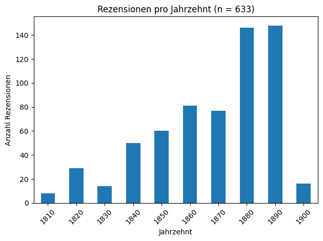
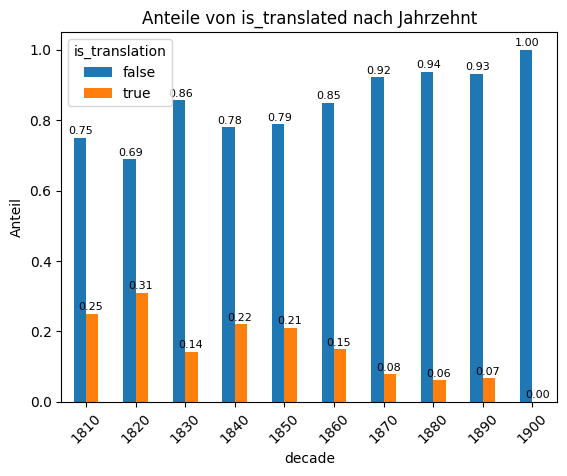
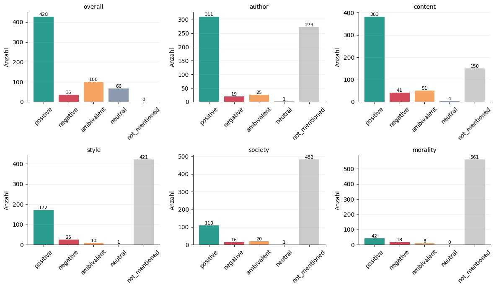
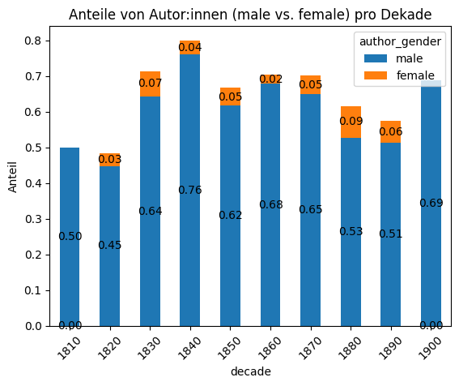
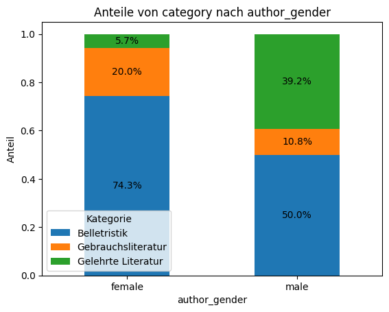
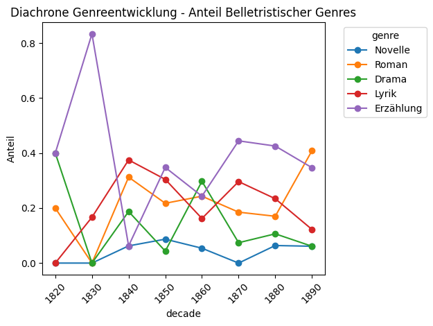
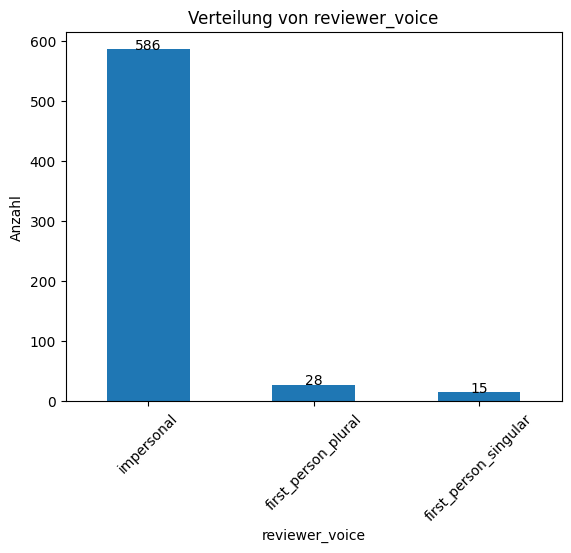

Die folgenden Visualisierungen geben einen Überblick über die zentralen quantitativen Befunde der explorativen Analyse. Mit den Pfeilen lässt sich zwischen den einzelnen Abbildungen navigieren. Eine zusammenfassende Interpretation der Ergebnisse findet sich im Abschnitt weiter unten.
Visualisierungen
Anzahl von Rezensionen pro Jahrzehnt im Korpus

Trotz des Versuchs einer Ausbalancierung des Korpus durch zufällige Auswahl von 20 Seiten pro Jahr des Untersuchungszeitraums, zeigt sich klar, dass in den späteren Jahrzehnten deutlich mehr Rezensionen innerhalb der Kölnischen Zeitung enthalten sind. Dies deutet auf eine steigende Relevanz der Literaturkritik innerhalb der Zeitung hin. Das 1900er-Jahrzehnt ist dagegen datenarm, da hierfür nur das Jahr 1900 im Korpus enthalten ist. Diese ungleiche Verteilung muss bei den künftigen Analysen beachtet werden.
Anteil von Übersetzungen nach Jahrzehnt

Der Anteil übersetzter Werke unter den rezensierten Titeln sinkt im Verlauf des 19. Jahrhunderts deutlich: Während in den 1830er-Jahren noch über 30 % der besprochenen Werke Übersetzungen sind, fällt dieser Anteil nach 1870 auf unter 10 %. Diese Entwicklung spiegelt den wachsenden Stellenwert der deutschsprachigen Originalliteratur und die zunehmende Eigenständigkeit des deutschen Buchmarkts wider.
Sentiment Verteilungen im Korpus

Über alle Bewertungsdimensionen hinweg, dominieren positive Wertungen. Daneben haben die ambivalenten Wertungen noch einen vergleichsweise großen Anteil, während vollständig negative Bewertungen seltener sind. Nicht alle Bewertungsebenen spielen für jede Rezension eine Rolle, was die Verteilung der not_mentioned Werte zeigt: Am häufigsten werden Inhalt oder Autor:in in die Bewertung einbezogen, während z. B. nach moralischen oder gesellschaftlichen Kriterien seltener gewertet wird.
Geschlechterverteilung der Autor:innen nach Jahrzehnt

Werke weiblicher Autorinnen machen im Datenset in keinem Jahrzehnt mehr als 10 % der rezensierten Titel aus. Die Unterrepräsentation ist damit nicht nur ausgeprägt, sondern bleibt über den gesamten Untersuchungszeitraum niedrig. Hier nicht enthaltene Werte wurden als unknown markiert, doch zumeist sind diese männlich auflösbar.
Kategorien nach Geschlecht der Autor:innen

Werke weiblicher Autorinnen werden fast ausschließlich der Belletristik zugerechnet (ca. 74 %), sowie in einigen Fällen der Gebrauchsliteratur, während bei männlichen Autoren ein breiteres Genrespektrum sichtbar wird: Die Gelehrte Literatur (ca. 39 %) ist hier deutlich vertretener. Frauen als Autorinnen gelehrter oder wissenschaftlicher Texte tauchen im Korpus so gut wie nicht auf.
Entwicklung belletristischer Genres im Zeitverlauf

Es zeigt sich eine anteilmäßige Zunahme der Besprechungen von Romanen gegen Ende des Untersuchungszeitraums, dagegen zeigen sich leicht rückläufige Tendenzen bei Drama und Lyrik, die spätestens in den 60er-Jahren anteilmäßig ihren Höhepunkt erlebt haben.
Entwicklung belletristischer Genres im Zeitverlauf

Insgesamt erscheinen Besprechungen in der impersonalen, dritten Person gegenüber solchen, die in der ersten Person verfasst sind, deutlich am häufigsten.
1 / 7
Zusammenfassung der Ergebnisse
Frequenz und Institutionalisierung
Rezensionen treten in der Kölnischen Zeitung zunächst vereinzelt auf und nehmen ab den 1840er-Jahren, mit der Etablierung des Feuilletons als fester Rubrik, deutlich zu. Den Höhepunkt erreicht die Rezensionsfrequenz in den 1880er- und 1890er-Jahren. Die Zeitung entwickelt sich damit im Verlauf des Jahrhunderts erkennbar von einem gelegentlichen zum systematischen Publikationsort der Literaturkritik.
Am häufigsten bewertet werden Inhalt und Autorschaft (sentiment_content, sentiment_author); moralische oder gesellschaftliche Dimensionen spielen eine untergeordnete Rolle.
Wo moralisch gewertet wird, fällt die Bewertung tendenziell negativer aus als in anderen Dimensionen.
Genres und Gattungswandel
Belletristik (269 Rezensionen), Gelehrte Literatur (253) und Gebrauchsliteratur (107) sind annähernd gleichmäßig vertreten, wobei Belletristik leicht überwiegt.
Der Roman gewinnt in den 1890er-Jahren sichtbar an Rezensionsanteil, wird dabei aber häufiger ambivalent bewertet – und zeitgenössisch metareflexiv als aufsteigendes, aber umstrittenes Genre verhandelt.
Übersetzungen
Der Anteil übersetzter Werke sinkt von über 30 % (1830er) auf unter 10 % (nach 1870).
Häufigste Ausgangssprachen sind Französisch und Englisch.
Die Entwicklung spiegelt den wachsenden Stellenwert deutschsprachiger Originalliteratur und die Herausbildung eines eigenständigen nationalen Buchmarkts wider.
Geschlecht und Sichtbarkeit
Weniger als 10 % der rezensierten Werke stammen in jedem Jahrzehnt von Autorinnen – die Unterrepräsentation ist damit zeitübergreifend gegeben.
Werke weiblicher Autorinnen sind fast ausschließlich der Belletristik zugeordnet, oft mit einem dezidiert weiblichen Adressatenkreis.
Die Bewertungen von Werken weiblicher Autorinnen sind trotzdem vergleichbar positiv wie jene ihrer männlichen Kollegen.
Rhetorik der Wertung
Rezensionen sind überwiegend in der dritten Person und impersonal gehalten – Urteile werden somit als behauptete Fakten präsentiert, nicht als subjektive Meinungen. Dies verstärkt die autoritative Wirkung der Kritik, die Selektivität und Empfehlung als zentrale Funktionen hat.